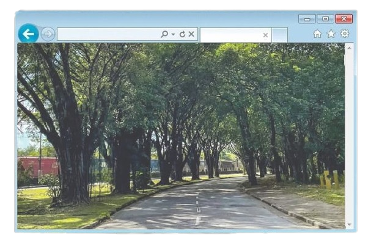

População: ~130 mil habitantes (2022)
Localização: litoral de São Paulo (Baixada Santista)
Bioma: Mata Atlântica
Fundação: município criado em 1949
Aniversário: 9 de abril
Característica: polo industrial (forte vocação para indústria pesada
e petroquímica)

A região de Cubatão já era utilizada desde o período colonial como uma
importante rota de ligação entre o litoral e o planalto paulista.
Por
meio do antigo Caminho do Mar, tropas e mercadorias transitavam entre
o interior, especialmente a cidade de São Paulo, e o porto de Santos,
tornando Cubatão um ponto estratégico para o desenvolvimento econômico
da região desde os primeiros séculos da colonização.
Ao longo do
tempo, essa posição privilegiada consolidou Cubatão como um elo
fundamental entre o litoral e o interior.
No entanto, foi
principalmente durante o século XX que a cidade passou por uma
transformação profunda.
A partir da década de 1950, com o avanço da
industrialização no Brasil, Cubatão experimentou um crescimento
acelerado, impulsionado pela instalação de grandes indústrias,
especialmente dos setores petroquímico, siderúrgico e de
fertilizantes.
Esse processo fez com que o município se tornasse um
dos principais polos industriais do país, recebendo o apelido de “Vale
da Morte” nas décadas de 1970 e 1980 devido aos altos níveis de
poluição ambiental.
Posteriormente, a cidade passou por um importante
processo de recuperação ambiental, tornando-se referência mundial em
controle de poluição industrial.
Hoje, Cubatão é reconhecida tanto por
sua importância histórica e econômica quanto por seu exemplo de
recuperação ambiental, mantendo seu papel estratégico na ligação entre
o litoral e o planalto paulista.
Economia baseada na indústria (petroquímica, siderurgia,
fertilizantes) Forte ligação com o Porto de Santos Turismo menos
desenvolvido, mas com foco em ecoturismo Importância econômica
regional muito alta
População majoritariamente urbana Crescimento ligado à
industrialização Melhorias sociais após controle da poluição Ainda
enfrenta desafios urbanos e sociais
Localizada entre a Serra do Mar e a planície litorânea Presença de rios e áreas de mangue Grande área de Mata Atlântica preservada Região de relevo montanhoso e úmido
Caminho do Mar (rota histórica) Parque Estadual da Serra do Mar
Usinas e complexo industrial (importância histórica/econômica)